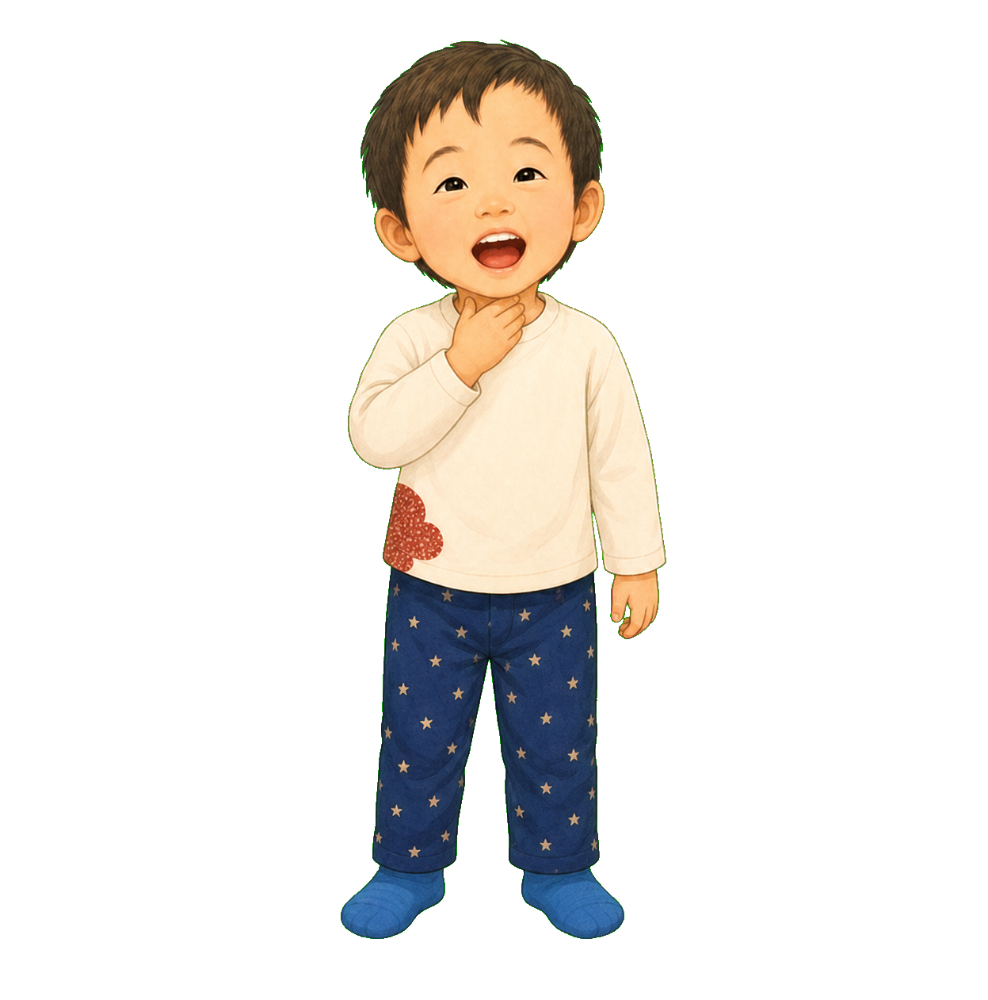
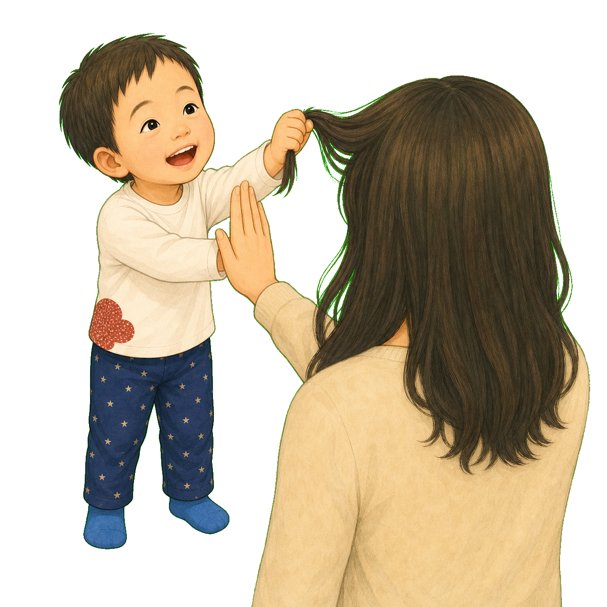
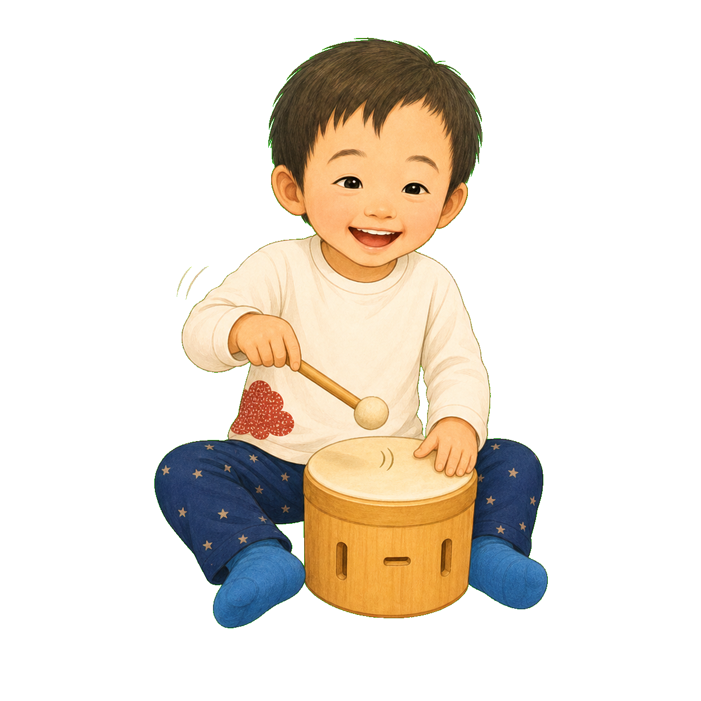

1
ぼくの からだは、
ときどき ふしぎなことを する。
ぼくにも、どうしてなのか
まだ うまく いえない。
「ちょうどいい かんじ」を
さがしているのかな。
2
あー。うー。
のどの あたりを おして、
かわる こえを たのしむ。
のどの ふるえと、いつもと ちがう音。
ぼくには おもしろい あそび。
でも、のどを つよく おすのは きけん。
まず やさしく とめてもらう。

3
ぎゅっ。
ひとの かみを、
つよく ひっぱりたくなる。
にぎる かんじ。ひっぱる かんじ。
相手は いたい。でも ぼくは まだ わからない。
手を やさしく とめて、
かわりに にぎれるものへ。

4
ごはんを、
くち いっぱいに。
すこしだと、くちの なかで
「ごはんが ここに ある」が
わかりにくい ときがある。
いっぱいなら、
つよく かんじられる。

5
「のどは おさないよ」
「かみを はなそう」
「つめこまないで」
ママも こまっている。
ぼくも、やめかたが わからない。
こまらせたいんじゃない。
からだが なにかを つたえている。
6
りすせんせいは、
すぐに「感覚のせい」と
きめなかった。
「いつ？ どこで？
そのまえと あとは？
いっしょに みてみよう」
7
からだの サインには、
いくつもの かのうせい。
もっと かんじたい？
つよすぎて つらい？
つかれた？ ひまだった？
どこか いたい？ うまく できない？
ひとつの 行動に、
ひとつの こたえを つけない。
8
くち いっぱいには、
もうひとつ たいせつなこと。
かばせんせいは、ひとくちの りょう。
かむこと。したの うごき。たべる はやさ。
むせずに のみこめているかを みる。
感覚だけじゃなく、
たべる力と あんぜんも。


9
あしが ゆかに つく いす。
おさらには、ひとくちずつ。
つぎの ひとくちまで、ちょっと まつ。
おとと においが つよい日は、しずかな ばしょ。
ぼくを とめるより、
あんぜんに わかる かたちへ。
10
ぼくは、音と ふるえを
くりかえし さがすこともある。
はを ずっと ぎりぎり。
音の でる おもちゃを、なんども とんとん。
同じ音が かえってくると、わかりやすい。
安全に とめることと、
かわりの 感覚を さがすこと。

11
りすせんせいは、
ひとりで きめない。
食べることは、かばせんせい。
痛みや体調は、くませんせい。
ママが みつけた「いつもと ちがう」も たいせつ。
みんなの きづきを つなぐと、
ぼくの サインが みえてくる。
ぼくの 行動は、
こまらせるためじゃなかった。
「もっと かんじたい」
「これは つよすぎる」
「ちょっと いたい」「うまく できない」
ぼくの からだからの
いろんな おはなしだった。
おはなしの あとに
理解することと、安全に止めることは両立できます。
喉元への圧迫、他人の髪を強く引く行動、長く続く歯ぎしりなどは、感覚を求める行動の可能性があっても、まず安全に止めてください。喉の痛み、声のかすれ、呼吸や飲み込みの変化がある場合は医療機関へ。歯ぎしりが続く場合は歯科等へ相談してください。口に食べ物を多く入れることも感覚だけで決めつけず、噛む力、舌の動き、一口量、姿勢、食べる速さ、嚥下を確認します。行動の前後を観察し、OT、摂食・嚥下を扱うST、医療職と安全な代替手段を検討してください。
りすせんせいに相談する